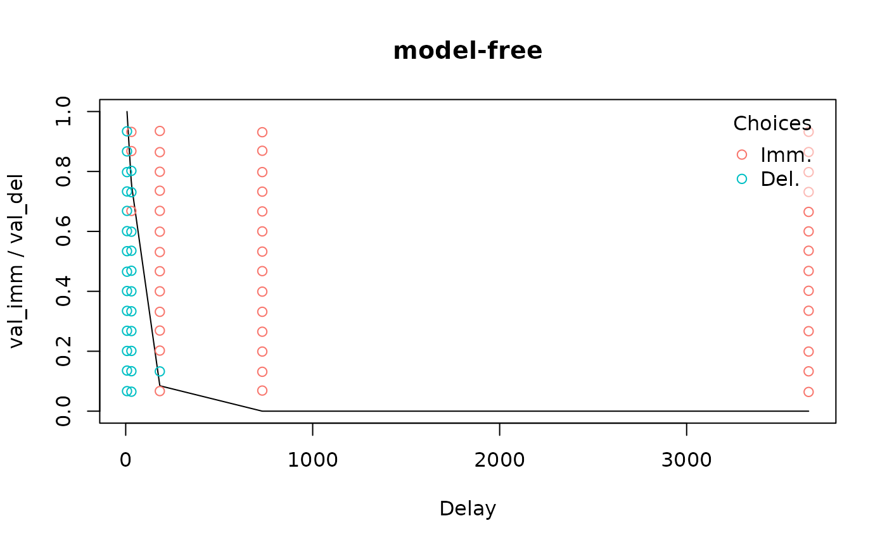

This vignette briefly goes over the main steps involved in analyzing delay discounting data. These topics are covered in greater depth in other vignettes and in the documentation of the relevant functions.
Loading data
tempodisco includes several example datasets. We will
load one example from a simulated “adjusting amounts” procedure (Frye et al., 2016), and one
from a procedure in which choices were not structured according to such
a procedure.
data("adj_amt_sim") # Load simulated choice data from an adjusting amounts procedure
head(adj_amt_sim)
#> del val_del val_imm imm_chosen trial_idx
#> 1 7 800 400 FALSE 1
#> 2 7 800 600 FALSE 2
#> 3 7 800 700 FALSE 3
#> 4 7 800 750 FALSE 4
#> 5 7 800 775 FALSE 5
#> 6 30 800 400 FALSE 6
data("td_bc_single_ptpt") # Load choice data from a non-adjusting-amounts experiment
head(td_bc_single_ptpt)
#> id val_imm val_del del imm_chosen rt
#> 1 61dcacaa5ed72-dd-61dcb234e8a1c.txt 112 187 30.4167 FALSE 5.435
#> 2 61dcacaa5ed72-dd-61dcb234e8a1c.txt 50 187 30.4167 FALSE 1.913
#> 3 61dcacaa5ed72-dd-61dcb234e8a1c.txt 37 186 3652.5000 TRUE 2.931
#> 4 61dcacaa5ed72-dd-61dcb234e8a1c.txt 28 211 182.5000 FALSE 7.639
#> 5 61dcacaa5ed72-dd-61dcb234e8a1c.txt 53 197 182.5000 TRUE 2.129
#> 6 61dcacaa5ed72-dd-61dcb234e8a1c.txt 98 184 730.5000 TRUE 1.569For each dataset, there are rows containing the values of the
immediate and delayed rewards, the delay of the delayed reward, and
whether the immediate reward was chosen. To use the functions in
tempodisco, your own data will need these same columns
named in the same way.
Computing indifference points
For the adjusting amounts data, we can use the
adj_amt_indiffs function to compute indifference points at
each delay:
indiff_data <- adj_amt_indiffs(adj_amt_sim)
head(indiff_data)
#> del indiff
#> 1 7 0.984375
#> 2 30 0.859375
#> 3 90 0.046875
#> 4 180 0.453125
#> 5 360 0.015625For non-adjusting-amounts data, we can use a form of logistic regression that models each indifference point as the point at which a participant has a 50% estimated probability of selecting the immediate or delayed reward:
indiff_mod <- td_bcnm(td_bc_single_ptpt, discount_function = 'model-free')
plot(indiff_mod, verbose = F)
Data quality checks
We can test for non-systematic discounting per the criteria of Johnson & Bickel
(2008) using the nonsys function:
Measuring discounting
To quantify discounting given a set of indifference points, we can use the “area under the curve” measure (Myerson et al., 2001). The lower this measure is, the steeper an individual’s delay discounting.
Fitting discount functions
Fitting a discount function to a set of indifference points can be
done using the td_ipm function:
coef(hyperbolic_mod)
#> k
#> 0.01767316In contrast, fitting a discount function to choice-level data involves a form of logistic regression where, as before, the indifference points (determined by a discount function) are the points where the individual has a 50% estimated probability of selecting the immediate vs delayed reward.
hyperbolic_mod <- td_bcnm(td_bc_single_ptpt, discount_function = 'hyperbolic')
plot(hyperbolic_mod, verbose = F)
coef(hyperbolic_mod)
#> k gamma
#> 0.01728009 0.06758106From here, we can extract the values from the best-fitting hyperbolic discount curves for each participant and use these as a measure of discounting (higher means steeper discounting).